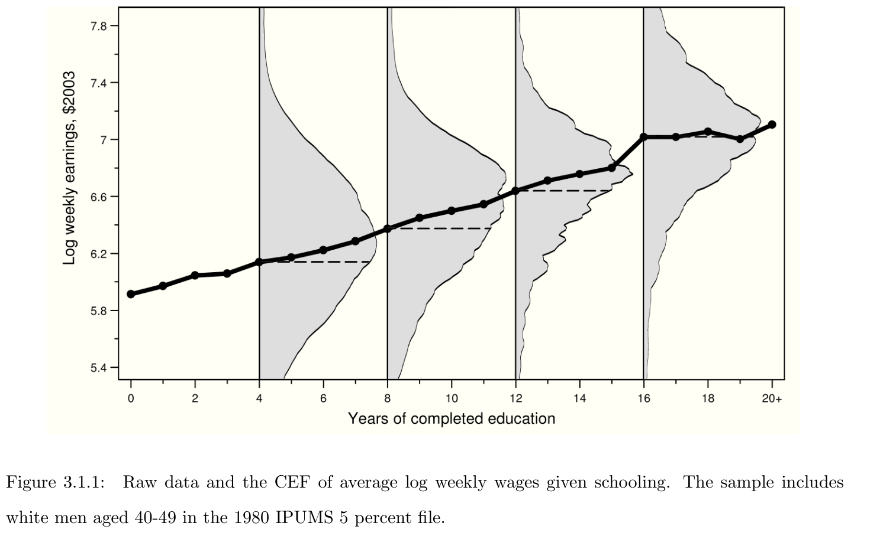
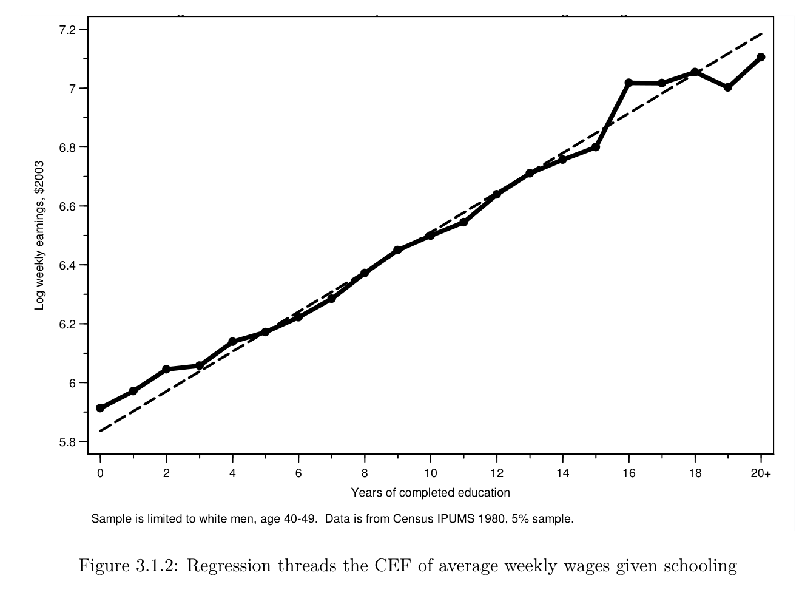
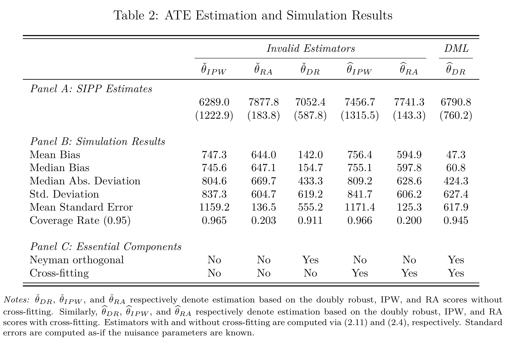

Let’s first take a little detour/recap on regression to see where we are coming from
I have picked out some highlights from (Angrist & Pischke, 2008) in the following
Econometrics and Regression
CEF Decomposition property: for \(Y\) an outcome variable and \(X\) a \(k \times 1\) vector of covariates, we have the decomposition: \[\begin{align}
\label{eq:cefdecomp}
Y = E[Y \mid X] + \varepsilon
\end{align}\] where \(E[Y \mid X]\) is the conditional expectation function (CEF) and
\(\varepsilon\) is mean-independent of \(X\) i.e. \(E[\varepsilon \mid
X] = 0\)
\(\varepsilon\) is uncorrelated with any function of \(X\)
Econometrics and Regression
Let \(m(X)\) be any function of \(X\). The CEF solves:
i.e. it is the minimum mean squared error (MMSE) predictor of \(Y\) given \(X\).
Regression estimand
Regression estimates provide a valuable baseline for almost all empirical research because regression is tightly linked to the CEF, and the CEF provides a natural summary of empirical relationships.
\(\beta\): vector of population regression coefficients, defined as the solution to a population least squares problem: \[\begin{align}
\label{eq:argminbeta}
\beta = \underset{b}{\arg\min} \ E \left[ (Y - X'b)^{2} \right]
\end{align}\] First-order condition (FOC): \[\begin{align}
\label{eq:beta}
E \left[ X(Y - X'\beta) \right] = 0
\iff
\beta = E[XX']^{-1}E[XY].
\end{align}\]
Linear CEF Theorem: Suppose the CEF is linear. Then the population regression function is it.
Assume \(E[Y \mid X] = X'\beta^{*}\); insert in FOC and solve
The Best Linear Predictor Theorem: The function \(X'\beta\) is the best linear predictor of \(Y\) given \(X\) in a MMSE sense.
\(\beta = E[XX']^{-1}E[XY]\) solves the population least-squares problem
The Regression-CEF Theorem: The function \(X'\beta\) provides the MMSE linear approximation to \(E[Y \mid X]\) i.e. \[\begin{align}
\label{eq:cefapprox}
\beta = \underset{b}{\arg\min} \, E \left\{ (E[Y \mid X] - X'b)^{2}
\right\}.
\end{align}\]
Apply the LIE to the FOC to see \(E \left[ X(Y - X'\beta) \right] = 0 \iff E \left[ X(E[Y \mid X] - X'\beta) \right] = 0\)
CEF and Regression-CEF Theorem


Regression Justifications
The regression-CEF theorem is Angrist & Pischke’s favorite way to motivate regression
The statement, that regression approximates the CEF, lines up with our view of empirical work as an effort to describe the essential features of statistical relationships, without necessarily trying to pin them down exactly
This is cool!
But what if:
CEF, \(E[Y \mid X]\), is high-dimensional and non-linear?
Regression provides the best MMSE linear approximation to \(E[Y \mid X]\), but this might not be good enough in more complex (high-dimensional + non-linear) scenarios
Can we use machine learning to estimate the CEF and conduct valid inference on some target parameter of interest (that depends on estimating the CEF in a first step)?
Statistical modelling in the age of data science
Breiman’s two worlds
Tradition within:
Computer science: let the data speak by making use of flexible, black-box predictive models
Focus on prediction
No statistical inference
Statistics/econometrics: use (semi)parametric models with the primary aim to provide insight into data
Focus more on the model than on the problem one is trying to solve
Great danger in drawing false conclusions when viewing the fitted model as a representation of the ground truth
Statistical modelling in the age of data science
Bridging the two cultures
Rapidly growing interest within causal inference literature in leveraging data-adaptive methods for inferring effects of treatments on outcomes
Data-adaptive:
Uses the data to learn structure and can be automated such that it can be pre-specified without ambiguity
Random forest, gradient boosting, etc.
How is it done in practice?
Choosing an estimand
Starting point of analysis: not the choice of a model, but the choice of an estimand
An estimand represents an interpretable summary that we wish to target in our analysis
Connected to main scientific/research question of interest
Defined in a model-free way; can be unambiguously specified before seeing the data
Example: average treatment effect (ATE), which can be identified under causal assumptions as: \[\begin{align*}
\theta_{0} = E[Y(1) - Y(0)]
= E\{
E[Y\mid D = 1, X]
- E[Y\mid D = 0, X]
\}.
\end{align*}\] where
\(\theta_{0}\) estimand/target parameter
\(E[Y\mid D = 1, X]\) and \(E[Y\mid D = 0, X]\) nuisance parameters
Angrist & Pischke - Estimands
Two quotes:
Our “population first” approach to econometrics is motivated by the fact that we must define the objects of interest before we can use data to study them.
(Angrist & Pischke 2008, p 23) [boldface mine]
… it’s kosher — even desirable — to think about what a set of population parameters might mean, without initially worrying about how to estimate them.
(Angrist & Pischke 2008, p 28)
Estimation
After having chosen an estimand and done identification comes estimation
Estimation is done with an estimator
One estimator for the ATE is: \[\begin{align*}
\frac{1}{n}\sum_{i=1}^{n}
\{\hat{E}[Y_{i} \mid D_{i} = 1, X_{i}] - \hat{E}[Y_{i} \mid D_{i} = 0, X_{i}]\}
\end{align*}\] where the components are trained machine learning algorithms for the outcome in treated and non-treated units
Applying the estimator to a concrete dataset yields a number called the estimate
Problems with naive approach
Estimator on previous slide typically poor
ML algorithms tuned for prediction, not for estimating association measures
Estimator sensitive to estimation error in the ML components
Double machine learning (DML) is one framework to construct estimators that are non-sensitive to estimation error in the nuisances
With DML:
More time can be spent on translating scientific questions into interpretable estimands (that may or may not be linked to a statistical model)
Less time spent on interpreting wrong model
DML
DML: Double/debiased machine learning
A general approach to performing inference about a target parameter (estimand) in the presence of (high-dimensional) nuisance parameters
Using machine learners as nuisance estimators leads to biases:
Regularization bias
Overfitting bias
DML:
reduces the impact of nuisance parameter estimation on estimators of the parameter of interest
assumption-lean modeling; accommodates use of complex data types, e.g. text data
Two essential components:
Neyman orthogonality
Cross-fitting
DML estimator
A DML estimator is a plug-in estimator that leverages a first-step nuisance parameter estimator by relying on Neyman orthogonal scores and cross-fitting
It is DML’s combination of Neyman orthogonality and cross-fitting that allows for valid statistical inference on the target parameter
Stress on combination: doesn’t work with only one of them
We’ll return to that
DML setup
\(W = (Y, D, X)\) tuple of data for \(Y\) outcome, \(D\) treatment and \(X\) covariates
User-specified target parameter\(\theta_0\) defined as the solution to a moment condition: \[\begin{align}
\label{eq:moment-condition}
E \left[ m(W, \theta_{0}, \eta_{0}) \right] = 0
\end{align}\] where
\(m(W, \theta, \eta)\) is a known (possibly vector-valued) user-specified score function indexed by \(\theta \in \Theta\)
\(\eta_{0} \in \mathcal{T}\) is a nuisance parameter, which is not of direct interest but is needed for estimating \(\theta_{0}\)
Parameter is a general concept here; \(\eta_0\) is often a collection of functions to be estimated with machine learners
\(\Theta\) is a low-dimensional parameter space, while \(\mathcal{T}\) is a possibly high-dimensional parameter space
Score function for the ATE
Average treatment effect (ATE) as our target parameter: \[\begin{align*}
\theta_{0} = E[Y(1) - Y(0)]
= E\{
E[Y\mid D = 1, X]
- E[Y\mid D = 0, X]
\},
\end{align*}\] identified by the regression adjustment estimand (RHS) under conditional exogeneity
Score \[\begin{align*}
m(W; \theta_{0}, \eta_{0})
&= E[Y\mid D = 1, X] - E[Y\mid D = 0, X]
- \theta_{0}
\\
&= \ell_{0}(1, X) - \ell_{0}(0, X) - \theta_{0}
\end{align*}\] where \(\ell_{0}(D, X) := E[Y \mid D, X]\); here, \(\eta_0 = \ell_0\) is the nuisance parameter (function)
Notice: \[\begin{align*}
E \left[ m(W; \theta_{0}, \eta_{0}) \right] = 0
& \iff
E \left[
E[Y\mid D = 1, X] - E[Y\mid D = 0, X]
- \theta_{0}
\right] = 0
\\
& \iff
\theta_{0}
= E \left[
E[Y\mid D = 1, X] - E[Y\mid D = 0, X]
\right]
\end{align*}\] i.e. the score identifies our target parameter, the ATE
Plug-in estimators can be constructed as roots to the sample average of the scores: \[\begin{align}
\label{eq:root-plugin}
\frac{1}{n} \sum_{i=1}^{n} m(W_{i}; \check{\theta}, \check{\eta}) = 0
\end{align} \tag{1}\]
In practice:
estimate nuisance \(\eta_0\) with estimator \(\check{\eta}\)
plug it into sample moment condition and solve for estimator of target parameter
Regression adjustment example: \[\begin{align}
\frac{1}{n} \sum_{i=1}^{n} m(W_{i}; \check{\theta}, \check{\eta}) = 0
\iff
\check{\theta}
= \frac{1}{n}\sum_{i=1}^{n}
\left[ \hat{\ell}(1, X_{i}) - \hat{\ell}(0, X_{i}) \right]
\end{align}\] where \(\hat{\ell}(1, X_{i})\) estimator of \(E[Y \mid D = 1, X]\) trained on subset with \(D = 1\) and \(\hat{\ell}(0, X_{i})\) estimator trained on subset with \(D = 0\)
We have as many score equations as parameters of interest (to be able to invert the matrix\(\left[
-\frac{1}{n}\sum_{i=1}^{n}
\frac{\partial}{\partial \theta} m(W_{i}; \theta_{0}, \eta_{0})
\right]^{-1}\))
A sample root exists
First-order dependence of \(\check{\theta}\) and \(\check{\eta}\) poses substantial complications in settings where the nuisance parameter is high-dimensional
Here, \(\check{\eta}\) corresponds to a flexible estimator
Complication results because flexible estimators are often associated with non-negligible bias and variance.
The corresponding expansion in a high-dimensional setting may be dominated by the final term that involves \(\check{\eta}\).
Two sources of biases
Term corresponding to estimation error in \(\eta_{0}\) of expansion: \[\begin{align*}
\frac{1}{\sqrt{n}} \sum_{i=1}^{n}
\frac{\partial}{\partial \eta}
m(W_{i}; \theta_{0}, \eta_{0})(\check{\eta} - \eta_{0})
\end{align*}\]
The dominance of this term generally implies two distinct sources of bias in the target parameter estimator \(\check{\theta}\):
Regularization bias
Overfitting bias
Regularization bias arises because the estimation error \(\check{\eta} - \eta_{0}\) is too large
Overfitting bias appears because \(\check{\eta} - \eta_{0}\) is strongly correlated with \(W_{i}\)
Both biases imply a failure of conventional statistical inference on our target parameter
Neyman Orthogonality
A Neyman orthogonal score is a score function\(\psi\) that satisfies \[\begin{align}
E\left[ \psi(W_{i}; \theta_{0}, \eta_{0}) \right] & = 0, \\
\frac{\partial}{\partial \lambda}
E\left[ \psi(W_{i}; \theta_{0}, \eta_{0} + \lambda [\eta - \eta_{0}]) \right]
\Big|_{\lambda =0} & = 0,
\quad \forall \eta \in \mathcal{T},
\end{align}\] where \(\eta\) and \(\lambda\) can be interpreted as the direction and magnitude of a deviation away from the true nuisance parameter \(\eta_{0}\), respectively
The notation \(m\) is for an arbitrary score while \(\psi\) is for a Neyman orthogonal score
Neyman orthogonality:
Is a local robustness property of the score function that decreases sensitivity of the score the resulting plug-in estimator to the nuisance parameter
Allieviates regularization bias
Practical implication: inferential statements about \(\theta_{0}\) do not depend on the precise statistical properties of the nuisance estimator \(\check{\eta}\)
Neyman Orthogonality and bias term
Estimation error in \(\eta_{0}\) of expansion now with Neyman orthogonal score \(\psi\)
Neyman Orthogonality implies \(\frac{\partial}{\partial \eta}
\psi(W_{i}; \theta_{0}, \eta_{0})\) is mean zero
If the first-step estimation error \(\check{\eta} - \eta_{0}\) as also independent of data \(W_{i}\) then the bias term will vanish: \[\begin{align*}
\frac{1}{\sqrt{n}} \sum_{i=1}^{n}
\frac{\partial}{\partial \eta}
\psi(W_{i}; \theta_{0}, \eta_{0})(\check{\eta} - \eta_{0})
=
\sqrt{n}\left(\frac{1}{n} \sum_{i=1}^{n}
\frac{\partial}{\partial \eta}
\psi(W_{i}; \theta_{0}, \eta_{0})(\check{\eta} - \eta_{0})
\right)
\approx 0
\end{align*}\] under mild convergence requirements on \(\check{\eta}\) and additional mild regularity conditions.
In the expansion example, we assumed Neyman orthogonality and that the first-step estimation error \(\check{\eta} - \eta_{0}\) was independent of the data in order to get the bias term to vanish asymptotically
Generally, Neyman orthogonality alone is not sufficient to guarantee that first-step estimation of nuisance parameters can be ignored in inference about low-dimensional target parameters
This is where cross-fitting comes into play
Cross-fitting is a form of repeated sample splitting intended to reduce dependence between first-step estimation error and the data, thus alleviating overfitting bias
Cross-fitted MM estimator
Cross-fitted method of moments estimator: \[\begin{align}
\tilde{\theta}: \quad
\frac{1}{n} \sum_{k=1}^{K} \sum_{i \in I_{k}} m(W_{i};
\tilde{\theta}, \hat{\eta}_{-k}) = 0
\end{align}\] where
\(\{I_{k}\}_{k=1}^{K}\) is a random partition of the sample of individuals \(\{1, \ldots, n\}\) into \(K\) subsamples of approximately equal size
\(\{\hat{\eta}_{-k}\}_{k=1}^{K}\) are cross-fitted nuisance parameter estimators, each calculated on the observations excluding those in the sub-sample \(I_{k}\)
Because \(\hat{\eta}_{-k}\) uses only observations not in sub-sample \(k\), the estimation error in \(\hat{\eta}_{-k}\) is independent of observations in sub-sample \(k\)
This mechanically alleviates overfitting bias as long as observations are independent across \(i\)
A DML estimator is a plug-in estimator that leverages a first-step nuisance parameter estimator by relying on Neyman orthogonal scores and cross-fitting
Chernozhukov et al. (2018) provide conditions that allow researchers to make valid inferential statements about \(\theta_0\) using the DML estimator \(\hat{\theta}\)
Besides sampling and regularity conditions, a central sufficient condition for DML to work is that the nuisance parameter estimator \(\hat{\eta}\) converges sufficiently fast
DML Asymptotic Distribution
Under conditions on last line of prev. slide, the DML estimator is asymptotically normal \[\begin{align*}
\sqrt{n}(\hat{\theta} - \theta_{0})
\overset{d}{\to} \mathcal{N}(0, \hat{\Sigma}),
\end{align*}\]\[\begin{align*}
\hat{\Sigma} & := \hat{J}^{-1}
\left(
\frac{1}{n} \sum_{k=1}^{K} \sum_{i \in I_{k}}
\psi(W_{i}; \hat{\theta}, \hat{\eta}_{-k})
\psi(W_{i}; \hat{\theta}, \hat{\eta}_{-k})^{T}
\right)
\hat{J}^{-T}
\\
\hat{J} & := \frac{1}{n} \sum_{k=1}^{K} \sum_{i \in I_{k}}
\frac{\partial}{\partial \theta}
\psi(W_{i}; \theta, \hat{\eta}_{-k}) \Big|_{\theta = \hat{\theta}}
\end{align*}\]
The \(1 - \alpha\) confidence intervals about the target parameter \(\theta_{0}\): \[\begin{align*}
\left[
\hat{\theta} - c_{1 - \frac{\alpha}{2}}
\cdot \sqrt{\mathrm{diag}(\hat{\Sigma})/n},
\hat{\theta} + c_{1 - \frac{\alpha}{2}}
\cdot \sqrt{\mathrm{diag}(\hat{\Sigma})/n}
\right]
\end{align*}\]
Practical implication: Neyman-orthogonal scores and cross-fitting leads to DML standard errors being the standard errors that would be used if the nuisance parameter estimates were taken as the true parameters.
The key identification argument is that, conditional on observed demographics, 401(k) eligibility is as good as randomly assigned.
Controls collected in vector \(X_i\) and we also assume overlap \(0 < P(D_{i} =
1 \mid X) < 1\)
To estimate the ATE, consider the non-Neyman orthogonal IPW score, the Neyman orthogonal doubly robust score the regression adjustment (RA) score
Nuisance estimators: random forests with 1000 trees and a maximum depth of 8 and 4 for the outcome and treatment propensity functions
Example: 401K Eligibilty results

True underlying ATE \(\approx 6889\)
Example: price elasticity
Scientific question of interest:
What is the effect of setting a product’s price on the volume of its sales? I.e. what is its price elasticity of demand?
Scraped data on 9,212 toy cars from Amazon.com
\(D\) denotes the log of the price, \(Y\) the negative log of the sales rank (proxy for sales volume) of a toy car (randomly drawn from the population of toy cars sold on Amazon.com) and \(X\) a vectors of covariates
Relationship between \(Y\) and \(D\) is confounded; possibly by high-dimensional variables